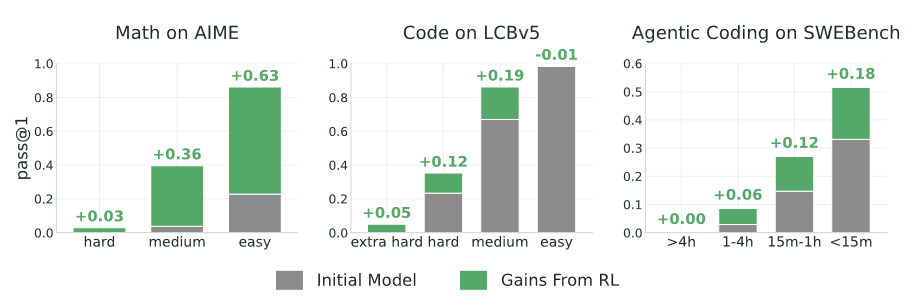
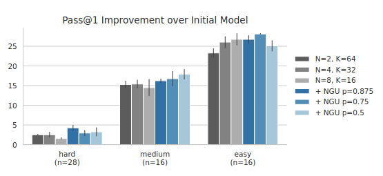
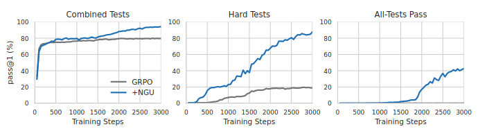

4 minutes
Paper Summary: The Matthew Effect in RL
Learning to Solve Hard Problems in RL for LLMs by Never Giving Up discusses an approach for countering what the authors call the Matthew Effect, the tendency for the LLM to improve much more on easy problems that it is already good than harder problems that have a lower solve rate. Their approach is to allocate training time dynamically based on the difficulty of the problem.
Background
After an LLM has been pretrained on a large corpus of supervised fine-tuning (SFT) data, it is common to post-train using reinforcement learning methods like GRPO. This allows the model to improve on tasks with verifiable rewards and even exceed the performance of the original SFT data.
In GRPO, we compute K completions (“rollouts”) for a single prompt. Next, the advantage of each rollout is calculated relative to the average of its peers.
So at K=8,
- If seven of eight rollouts received a reward, the average reward of the group is 0.875. The relative reward of each correct rollout is
1 - avg_reward = 1.0 - 0.875 = 0.125. The rollout which failed receives0 - 0.875 = -0.875reward. - If only one of the 8 receives a reward, the average reward is 0.125. The relative reward of the correct sample is
1 - 0.125 = 0.875. Seven of eight rollouts receive0 - 0.125 = -0.125reward. - If none of the 8 samples receive a reward, the average reward is zero and all eight rollouts receive zero reward.
Note that in reality we also normalize rewards by the standard deviation, but that detail doesn’t change the conclusion.
Performing vanilla GRPO in this way has a problem. For easy tasks, the model will be more likely to succeed and so at least one rollout in the group will receive a reward, so all members of the group will receive a gradient. For more difficult tasks, it is possible that none of the rollouts receive a reward, in which case the gradient will be zero for the group. As a result, the model tends to improve much more on easy problems than hard ones.

RL improves performance of LLMs on math and coding, but those gains are not distributed equally.
The authors call the phenomenon of zero gradient on difficult problems the signal loss hypothesis. One standard way to combat the signal loss phenonmenon is to simply increase K, which increases the chance of the group containing at least one good rollout.
This problem and solution seem reasonable, but the authors also suggest a related explanation called the signal efficiency hypothesis: in addition to having too few examples of difficult problems, the model might be seeing too many examples of good solutions to easy problems.
Probably don’t give up
The authors come up with a nice solution to this problem:
-
First, sample a small number K completions for the prompt (e.g. 4).
-
If all of the completions are correct, it’s an easy problem and we don’t need to train on it.
-
If all completions are wrong, we probably try again. The authors’ algorithm puts the problem back into the queue with probability
p_ngu, and sample K more completions
- For example with
p_ngu = 0.95there’s a 95% chance they try K more times, and if all of those rollouts fail there’s a 95% chance that they try K more times.
This algorithm allows us to dynamically scale compute based on problem difficulty.Easy problems might not be trained on at all, and hard ones can receive many attempts.
Additionally, because a rare solution to a hard problem will be compared to a large group of unsuccessful rollouts, the solution will receive a large reward 1-average_reward.
Because after each batch of all-failed rollouts there is a small probability that the algorithm won’t retry the prompt, the algorithm is more accurately called probably don’t give up. However, that name may have been taken.
Results
The authors trained Qwen 3 4B-base on 10k problems from Deepscaler math, dividing problems into 4 difficulty buckets based on Qwen’s initial solve rate. They then compared the performance of simply increasing K across all problems with using p_ngu of 0.5, 0.75, and 0.875.
They found that simply increasing K on all problems sacrifices performance on easy problems, while NGU was able to maintain performance on easy problems while improving even more on difficult ones.
This is likely because if performance begins to degrade on an easy problem, the algorithm can dynamically allocate more compute and put it back into the queue as well. In contrast, simply allocating K rollouts at the beginning of training based on initial performance fails to take into account fluctuations in performance during training.

On hard problems, NGU outperforms the strategy of simply increasing K, and on easy problems it matches performance.
On a coding-like benchmark, asking the model to play a game called Manufactoria, NGU is able to dynamically allocate compute towards the harder test cases, significantly outperforming vanilla GRPO.

Vanilla GRPO struggles with hard tests, meaning it cannot solve even a single example in the game.